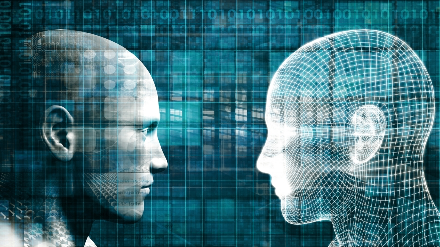

→ Home. Natural Language Processing. Algorithm. Security
Artificial intelligence (AI) refers to the simulation of human intelligence in machines that are programmed to think like humans and mimic their actions. The term may also be applied to any machine that exhibits traits associated with a human mind such as learning and problem-solving.
-------------------------------------------------------------------------------------------------------------------------------------------------------------------------------------------------------------------------------------------------------------------------------------
AI bias is the underlying prejudice in data that's used to create AI algorithms, which can ultimately result in discrimination and other social consequences. Here are a few examples:
-------------------------------------------------------------------------------------------------------------------------------------------------------------------------------------------------------------------------------------------------------------------------------------
AI offers a wide range of opportunities in different field. It also helps with automation and digital transformation. People have the fear of AI taking jobs away. If done right, AI won’t eliminate jobs; it will upgrade and create new jobs while at the same time removing some of the repetitive or mundane tasks associated with our work. Read more here
--------------------------------------------------------------------------------------------------------------------------------------------------------------------------------------------------------------------------------------------------------------------------------------------------------------------------------------------------------------------------------------------------------------------------------------------------------------------------------------------------------------------------------------------------------------------------------------
Created by Nhi Pham, Fall 2020